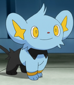
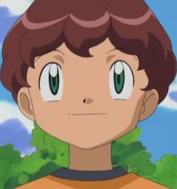
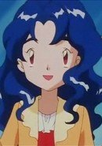

|
Marian |
- Pokemon Diamond and Pearl
|
Marian is the Sinnoh Contest announcer. She related to Vivian and Lilian. She looks like them but does not have a mole. |
 |
Mary Magdalene |
|
Mary Magdalene was a holy maiden for the Order of Magdalene who is able to foresee the future. She was nice and beautiful woman. Mary likes sewing, reading, and writing. She is highly intelligent and positive. |
 |
Rika Sasaki |
|
Rika Sasaki is a classmate and friend of Sakura Kinomoto. She is very elegant and mature for her age but can be shy. She has relationship with her teacter Yoshiyuki Terada. She is skill cook and very good at crafts. |
| |
Roselia |
- Pokemon Diamond and Pearl
|
Roselia is a Pokemon from the Hoenn region. It the evolved form of Budew. Roselia's aroma brings serenity, but the thorns on its head contains a vicious poison. Tomoko Kawakami voiced Nando's Roselia. |
 |
Rosette Christopher |
<
|
Rosette Christopher is an elite sxorcist of the order of Magdalene. She is an impulsive and hot-headed 16 year old. Rosette is a very rebellious and disobeys. She is very opimistic and determined getting her brother, Joshua, back. |
|  |
Shinx |
- Pokemon Diamond and Pearl
|
Shinx is a Pokemon from the Sinnoh region. If it senses danger, its fur can gleam brightly to blind predators so it can flee. Electricity is produced by the extension and contraction odf muscles in this Pokemon forelegs. Tomoko Kawakami voiced Angie's Shinx. |
|  |
Thatcher |
- Pokemon Advanced Generations
|
Thatcher is the brother of Alyssa. He protects his village's stone called the light stone. |
|  |
Violet |
- Pokemon
- Pokemon Chronicles
|
Violet is one of Misty's older sisters. She is the second oldest out of the four sisters. She and Lily tends to tease Misty more than Daisy. She encourages Misty to be a better trainer. She plays girlish roles for their performances. |